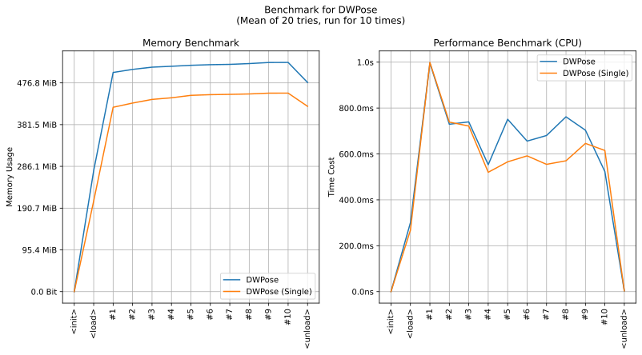

imgutils.pose.dwpose
- Overview:
Detect human keypoints in anime images.
The model is from https://github.com/IDEA-Research/DWPose.

This is an overall benchmark of all the keypoint detect models:

dwpose_estimate
- imgutils.pose.dwpose.dwpose_estimate(image: str | PathLike | bytes | bytearray | BinaryIO | Image, auto_detect: bool = True, out_bboxes=None, person_detect_cfgs=None) List[OP18KeyPointSet][source]
Performs inference on the RTMPose model and returns keypoints and scores.
- Parameters:
image (ImageTyping) – Input image.
auto_detect (bool) – Auto detect person with
imgutils.detect.person.detect_person().out_bboxes (Optional[List[Tuple[int, int, int, int]]]) – Bounding boxes.
person_detect_cfgs (Optional[Dict]) – Config arguments for
imgutils.detect.person.detect_person().
- Returns:
List of mapping of different parts, including
all,head,body,foot,hand1andhand2.- Return type:
List[OP18KeyPointSet]
- Examples:
>>> from imgutils.data import load_image >>> from imgutils.pose import dwpose_estimate, op18_visualize >>> >>> image = load_image('dwpose/squat.jpg') >>> keypoints = dwpose_estimate(image) >>> keypoints [<imgutils.pose.format.OP18KeyPointSet object at 0x7f5ca933f3d0>] >>> >>> from matplotlib import pyplot as plt >>> plt.imshow(op18_visualize(image, keypoints)) <matplotlib.image.AxesImage object at 0x7f5c98069790> >>> plt.show()
Note
Function
imgutils.pose.visual.op18_visualize()can be used to visualize this result.